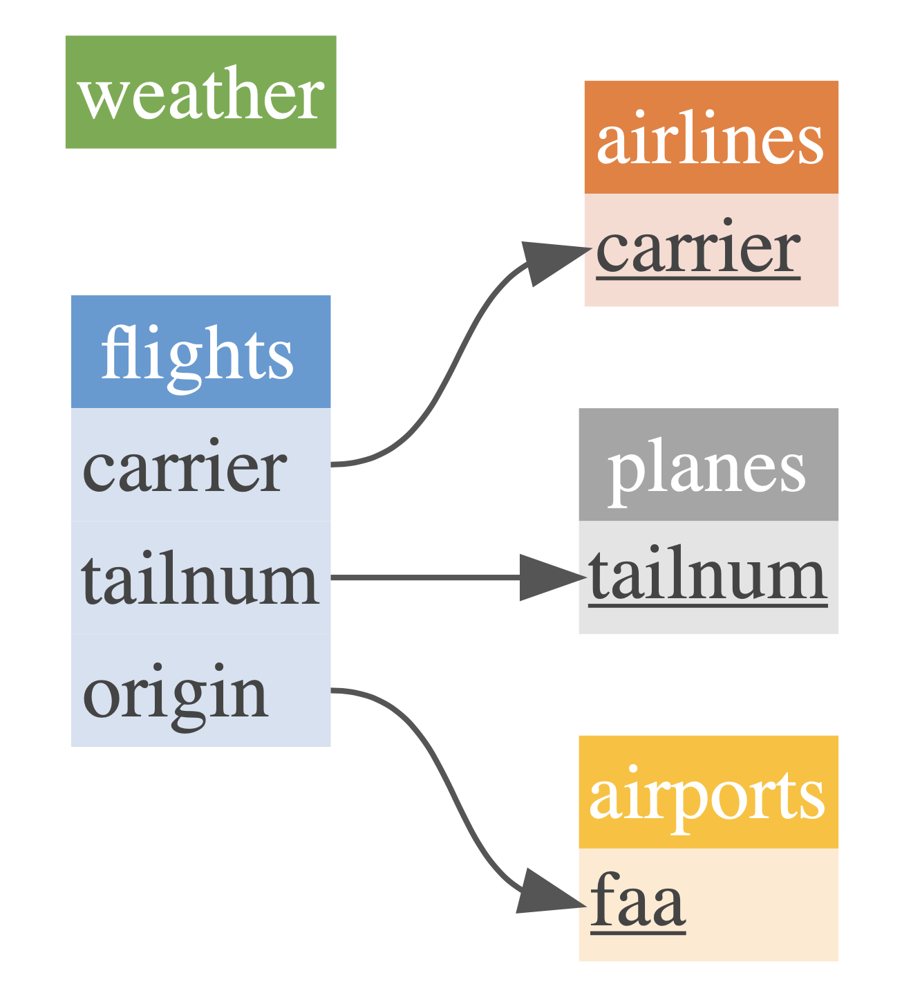

Introducing dm: easy juggling of tables and relations
The dm package reduces your mental strain when working with many tables. It connects your data, while still keeping them in their original tables. You can easily perform operations on all tables, visualize how they’re connected, and integrate databases.

Rather than writing out the relational structure in code while connecting the sources, dm packages them in data. This workflow prevents you from inconsistently updating tables, making copies due to redundancies and, more generally, losing track of decisions made in a data pipeline.
A case study
To demonstrate dm’s benefits, let’s compare some workflows using data from the nycflights13 package.
We want to get the data to analyze arrival delays of flights of planes built more than 30 years ago. For these flights, we also want to check if they departed for destinations in the south. We use methods from the dplyr package, the grammar for data manipulation from the tidyverse.
This requires columns lon (longitude) from table airports, year from table planes and arr_delay (arrival delay) from flights. We can do this by performing multiple joins, one after another, as you might be used to:
library(nycflights13)
library(dplyr)planes_join <- planes %>%
rename(production_year_plane = year) %>%
left_join(flights, by = "tailnum") %>%
left_join(airports, by = c("dest" = "faa")) %>%
select(lon, year, production_year_plane, dest)
planes_join %>%
filter(production_year_plane < 1983)## # A tibble: 1,432 x 4
## lon year production_year_plane dest
## <dbl> <int> <int> <chr>
## 1 -95.3 2013 1965 IAH
## 2 -95.3 2013 1965 IAH
## 3 -95.3 2013 1965 IAH
## 4 -95.3 2013 1965 IAH
## 5 -87.9 2013 1959 ORD
## 6 -97.0 2013 1959 DFW
## 7 -97.0 2013 1959 DFW
## 8 -97.0 2013 1959 DFW
## 9 -90.4 2013 1959 STL
## 10 -97.0 2013 1959 DFW
## # … with 1,422 more rowsFair enough, you might say — to keep an overview, we can reduce the 34 columns using select(), then filter(). But what do you do once there are 30 tables, possibly from databases you’re working with? Is this still a workable solution? And how sure are we that we truly only need these three columns?
dm
On your dm object, you can directly apply operations like filter() to all your tables! How so? Because relations between the objects are already registered in the dm object, you don’t need to indicate them.
Not having to state how tables are connected each time you perform a join may make exploratory work a lot easier:
library(dm)
cdm_nycflights13() %>%
cdm_filter(planes, year < 1983)## ── Table source ───────────────────────────────────────────────────────────
## src: <package: nycflights13>
## ── Data model ─────────────────────────────────────────────────────────────
## Data model object:
## 5 tables: airlines, airports, flights, planes ...
## 53 columns
## 3 primary keys
## 3 references
## ── Rows ───────────────────────────────────────────────────────────────────
## Total: 27583
## airlines: 4, airports: 3, flights: 1432, planes: 29, weather: 26115This produces an overview of your data sources — all tables still separated. Also note: there was no need to rename() the column year, and all tables stay separate.
What if you still wanted to produce a join and check where those flights departed to? Voilà:
cdm_nycflights13() %>%
cdm_filter(planes, year < 1983) %>%
cdm_join_tbl(flights, airports)## # A tibble: 1,432 x 19
## year month day dep_time sched_dep_time dep_delay arr_time
## <int> <int> <int> <int> <int> <dbl> <int>
## 1 2013 1 1 839 850 -11 1027
## 2 2013 1 1 858 900 -2 1102
## 3 2013 1 1 1219 1220 -1 1415
## 4 2013 1 1 1317 1325 -8 1454
## 5 2013 1 1 1422 1410 12 1613
## 6 2013 1 1 1806 1810 -4 2002
## 7 2013 1 1 1911 1910 1 2050
## 8 2013 1 1 2030 2045 -15 2150
## 9 2013 1 2 535 540 -5 831
## 10 2013 1 2 945 945 0 1113
## # … with 1,422 more rows, and 12 more variables: sched_arr_time <int>,
## # arr_delay <dbl>, carrier <chr>, flight <int>, tailnum <chr>,
## # origin <chr>, dest <chr>, air_time <dbl>, distance <dbl>, hour <dbl>,
## # minute <dbl>, time_hour <dttm>Visualization
You can easily gain a visual overview using cdm_draw(). This results in pretty, customizable (using cdm_set_colors()) visualizations of how your data connect.
cdm_nycflights13() %>%
cdm_set_colors(
flights = "blue_nb",
airlines = "orange_nb",
weather = "green_nb",
airports = "yellow_nb",
planes = "light_grey_nb"
) %>%
cdm_draw()
Databases
dm works for both in-memory data and databases. You can easily integrate it into your dbplyr workflow, making for new, powerful ways of analysis.
Feedback
This was just a short glimpse of what dm can do — more posts will follow. Feel free to contribute to this package on Github. Funding for dm is generously provided by Energie360 and cynkra. This package is authored by Tobias Schieferdecker and Kirill Müller.